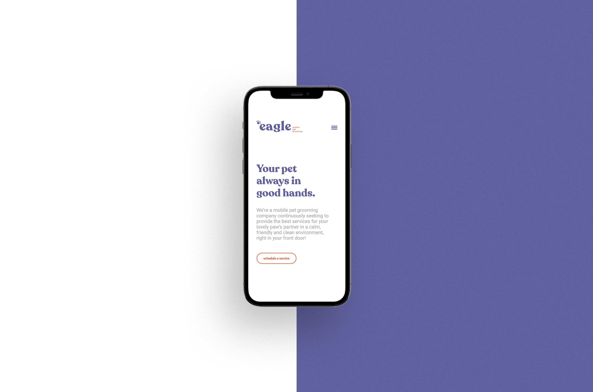

Projects on Portfolio
Here are some of my best projects developed between 2018-2021. Enjoy!
Aste - Brand and UI Design
Astê is an online store for women's underwear. Their goal today is to show to their customers how important it is to wear a comfortable and quality garment that makes them feel self-confident and beautiful.
The brand was designed for middle-class women, always looking to feel good and improve self-esteem.
For the logo, a typography with a light serif was chosen, which conveys elegance and modernity. A heart was inserted between the S and the T in negative space, which brings even more personality to the brand, representing self-confidence and self-esteem.
The logo translates in a clean and minimalist way everything that the brand represents: elegance, modernity, simplicity and self-confidence.

Eagle Pet Grooming - Brand and UI Design
Eagle Pet Grooming is a company specialized in cat and dog grooming. Based in San Francisco, California, Eagle serves all of its customers directly in their homes, with its own vans and groomers. Eagle's mission is to always serve all your dogs and cats with the utmost care and attention, providing security and comfort for them, during a time that generates a lot of stress for our little friends.
Then, the visual identity was created to be friendly and confident, with a friendly typography, and smooth colors, but without losing the seriousness and commitment that the company has with it's customers.

Vitor Nereu - Wing Chun - Brand Design
Wing Chun is a Martial Art System created in Southern China around 1733. This fighting style values the economy of movements and develop the students' body awareness and strategy and, unlike other styles, uses the opponents own strentgh against him, being practiced mainly for self defense.
The Wing Chun school of the master Vitor Nereu aims to be a martial arts school that teaches something other than a sport, but the reconnection of human beings with their own nature, which is combat, so that this reconnection occurs in a healthy and controlled environment providing health benefits, physical canalitioning, emotional balance and personal empowerment.